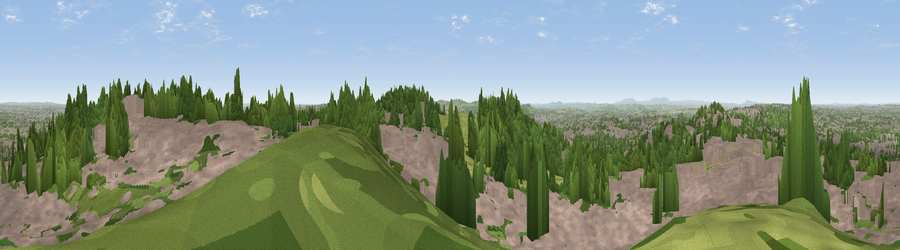

Viewpoint near Oakham
#6855 in England · top 3% of its area beats it · near OakhamWhere it is
The exact computed spot (SO 96538 89375). Click the marker for map links.
The view, rendered

A 360° render of this exact spot computed from the terrain model, tree cover and land cover — summer colours, afternoon light, calibrated against photographs of famous viewpoints. Real trees, hedges and buildings will differ in detail.
The panorama
Grey silhouette: terrain skyline in each direction (720 bearings, Earth curvature and refraction included). Dashed green: skyline with trees (+15 m) and buildings (+8 m) as obstacles. Blue strip: how far the ground is visible on each bearing.
Where the view opens
Wedge length = distance to the farthest visible ground on that bearing (vegetation-aware). Rings at 10, 25 and 50 km.
What fills the view
53% built-up · 30% woodland · 15% grassland · 2% cropland
Angular shares of the visible panorama (visual magnitude), not map area. Landscape diversity 0.46 (0–1 Shannon).
Key numbers
More beautiful places nearby
The staircase of upgrades: each row has a higher view potential than everything closer. Driving times are estimates from straight-line distance, calibrated against real road routing — check an actual route before setting out.
| Place | Direction | Drive | Score |
|---|---|---|---|
| Viewpoint near Oakham | S · 1 km | ~2 min | 68.2 |
| Viewpoint near Clent | SSW · 9 km | ~18 min | 73.8 |
| Viewpoint near Clent | SSW · 10 km | ~19 min | 74.3 |
| Knowle Hill | WSW · 28 km | ~45 min | 75.5 |
| Viewpoint near Abberley | SW · 30 km | ~47 min | 77.5 |
| Viewpoint near Abberley | SW · 31 km | ~48 min | 78.1 |
| Abberley Hill | SW · 31 km | ~48 min | 80.4 |
| Viewpoint near Great Witley | SW · 33 km | ~51 min | 83.4 |
52.50226, -2.05244 · source: screening · position refined by local search. Computed location — check access rights before visiting.